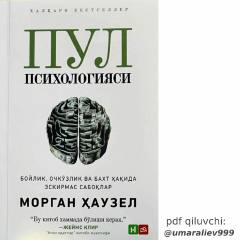

PPPul va boylik haqida insonning xulq-atvori orqali eskirmas saboqlar.
Morgan Hauzelning 'Pul psixologiyasi' kitobi boylik, ochko'zlik va baxt haqida eskirmas saboqlarni o'z ichiga oladi. Kitob pulni samarali boshqarishda moliyaviy yoki matematik bilimlar emas, balki insonning xulq-atvori va psixologiyasi hal qiluvchi rol o'ynashini hayotiy misollar orqali isbotlaydi. Tejamkorlik, kamtarlik va ehtiyotkorlik kabi insoniy fazilatlar boylikka erishishning asosiy omillari sifatida ko'rsatiladi.